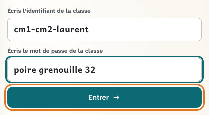
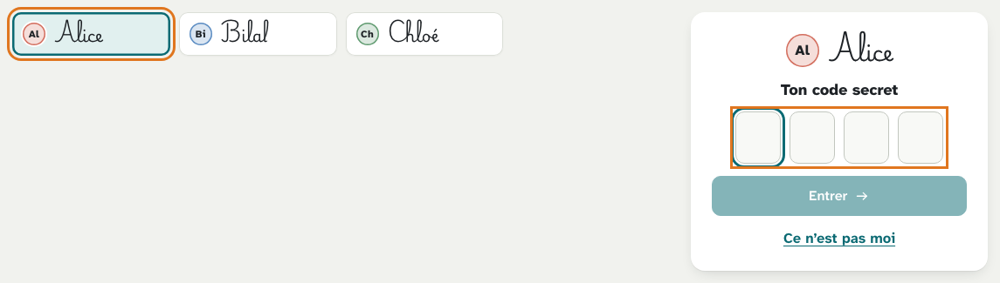
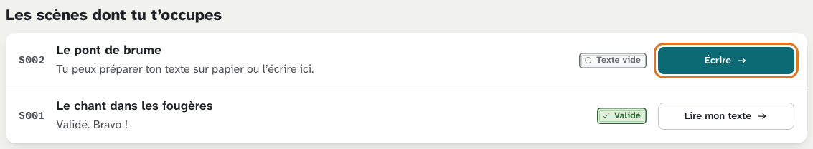
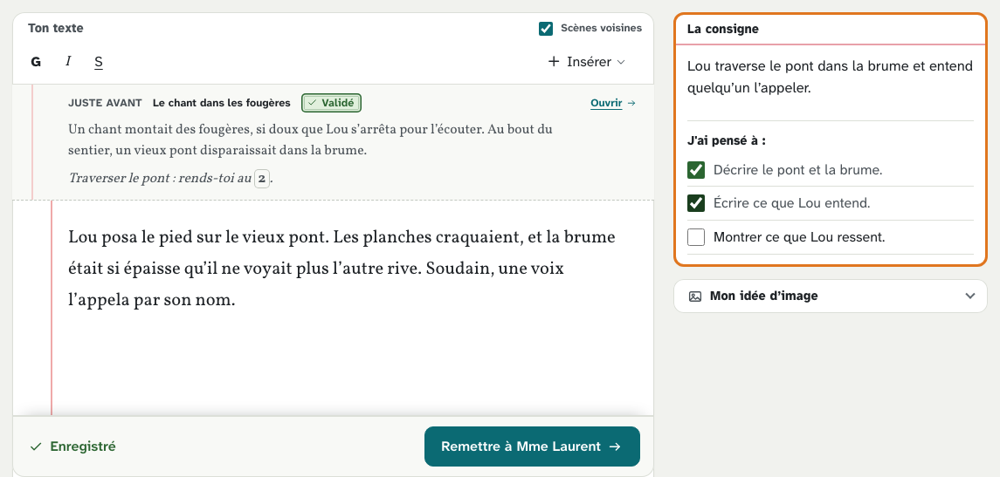

Avec Il était une classe · fiche de l’élève
Avec Il était une classe · fiche de l’élève
J’écris sur le site
Le site rassemble les scènes de toute la classe. Voici comment y écrire la tienne.

1J’entre dans la classe
J’ouvre le site iletaituneclasse.com/classe. Je tape l’identifiant et le mot de passe de la classe, puis je clique sur Entrer.
Souvent, l’enseignant l’a déjà fait.

2Je dis qui je suis
Je clique sur mon prénom, puis je tape mon code secret de quatre chiffres.

3Je trouve ma scène
Dans Mon travail, je clique sur Écrire, à côté de ma scène.

4J’écris ma scène
Je lis la consigne, puis j’écris mon texte : il s’enregistre tout seul. Je coche J’ai pensé à quand c’est fait. En haut, je relis la fin de la scène d’avant.
